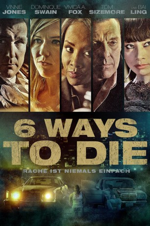
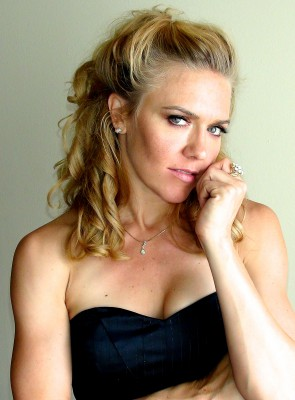

#7255 6 Ways to Die - Rache ist niemals einfach
Alternativ: 6 Ways to Die
 
 IMDB-Wertung: 4.1 / 10
IMDB-Wertung: 4.1 / 10  Metascore: 0
Metascore: 0 
Sonny "Sundown" Garcia ist das höchste Tier in Nordamerika, wenn es um den Drogenhandel für die kolumbianischen Kartelle geht. Ihm ist es gelungen, die effizienteste und produktivste Art zu entwickeln, Drogen an den Mann zu bringen. John Doe wiederum ist ein Mann voller Geheimnisse. Niemand weiß, wer er ist oder kennt seine Geschichte, doch eines ist klar: Er will Sundown tot sehen. Bevor dies geschieht, soll der Kriminelle allerdings den gleichen Schmerz erfahren, den er erfahren musste. Er soll alles verlieren, was er selbst verloren hat. Um seinen Racheplan auszuführen, heuert Doe sechs Spezialisten an, jeder mit seinen eigenen Fähigkeiten bestückt, denn Doe will, dass Sundwon genau sechs Dinge verliert: seine Freiheit, seine Liebe, seinen Ruf, sein wertvollstes Hab und Gut, sein Geld und zu guter Letzt sein Leben. Von einem auf den anderen Tag verwandelt sich Sundowns Leben in die Hölle auf Erden.
Jahr: 2015
Dauer: 103 Minuten
FSK: 16
Land: USA Studio: Entertainment OneTonspuren: DTS - ,
Untertitel: Deutsch, Englisch,
Auflösung: 1080p (1920x808) Größe: 6133 MB
Genre: Thriller, Krimi, Mystery
Regisseur: Nadeem Soumah
Drehbuch: Nadeem Soumah
Soundtrack:
Darsteller:
 Vinnie Jones als John Doe
Vinnie Jones als John Doe Vivica A. Fox als Veronica Smith
Vivica A. Fox als Veronica Smith-  Dominique Swain als Steph Garcia
- Bai Ling als June Lee
- Michael Rene Walton als Sonny 'Sundown' Garcia
 Tom Sizemore als Mike Jones
Tom Sizemore als Mike Jones- Luis Fernandez-Gil als El Jefe
 Chris Jai Alex als Frank Casper
Chris Jai Alex als Frank Casper Jose Rosete als Marcus
Jose Rosete als Marcus- Melissa Mars als Olivia
- Jeff Galfer als Hunter
- Marco Silvestri als Teenage John Doe
- Sandra Valladares als Teenage Sophia
- Kinga Philipps als Agent Carter
 Peter Dobson als Detective Wilcox
Peter Dobson als Detective Wilcox- David Villada als Camacho
- David Saucedo als Rosco
- Alejandro Barrios als Camron
- David Sommer als Tyler
- Serag Mohamed als Agent Franco
- Brad Nelson als Marco
- Justin Bigelli als Drug Dealer 1
- Chris Serafin als Drug Dealer 2
- Gene Freeman als Drug Dealer 3
- Scott Speiser als Rob
- Jamie Miller als Chelsea
- America Del Sol als Sophia's Mother
- Eric Pierce als John
- Kate Boyer als Sara Plummer
- Ido Mor als Arab Mobster 1
- Hugh Mun als Khaled
- Robert Rexx als Mexico Thug
- Leonel Claude als Club Patron , uncredited
 Waymond Lee als Dancing Club Patron , uncredited
Waymond Lee als Dancing Club Patron , uncredited- Vinny Silva als Teenage Sundown
- Nicholas Small als Ten Year Old John Doe
- Hailey Makae Pratti als Ten Year Old Sophia
- Tommy Gunns als John Doe's Father
- Brandon Menald als Ricky
- Prince Shah als Sundown Enforcer 1
- Ivana Radetich als Pool Guest
- Hamid Savalanpour als Bartender
- Destiny Soria als Girl at Bar , uncredited
Datei: X:\2015(A-F)\6 Ways to Die - Rache ist niemals einfach (2015, FSK16, 1920x808).mkv seit 09.10.2017
Festplatte: HD 2015(A-Z)
 Es gibt insgesamt 143 Filme in der Gruppe '2015(A-F)'
Es gibt insgesamt 143 Filme in der Gruppe '2015(A-F)'